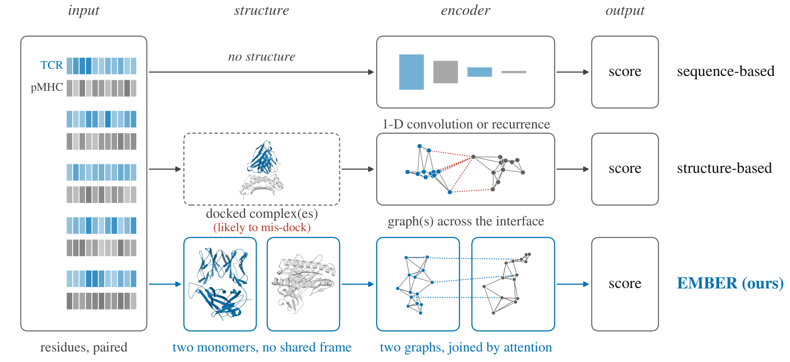
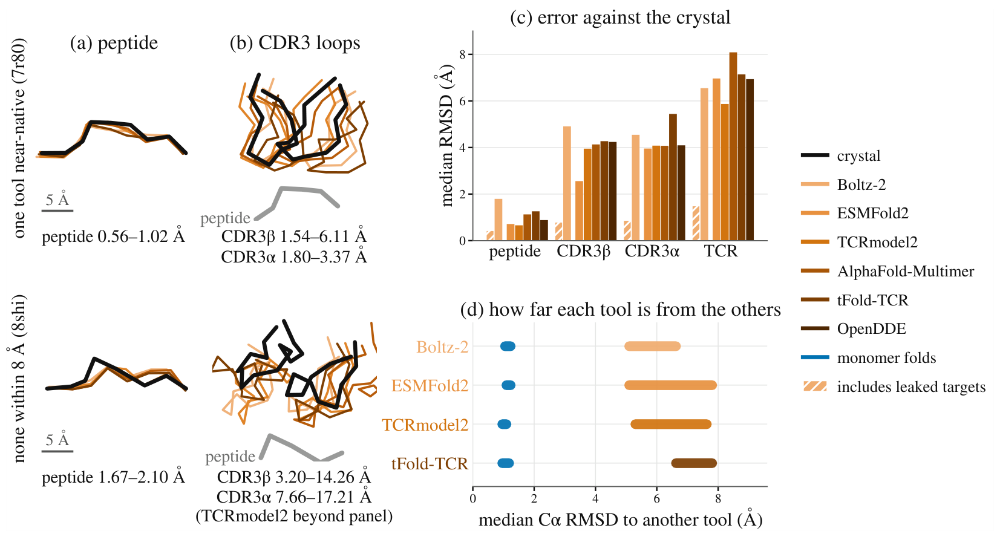
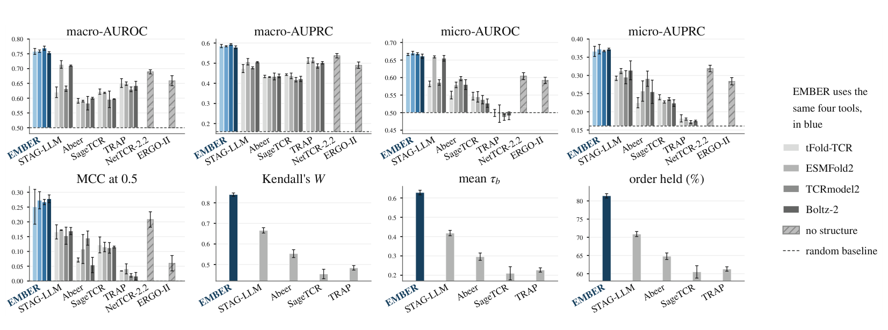
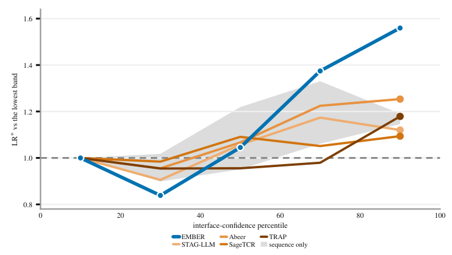

ESMFold2 structures MCC at a fixed threshold of 0.5
0.1720.273
58.7% higher MCC
STAG-LLM → EMBER · 51 to 75% across the four folding tools
Fold the two molecules apart, and the docking error never reaches the score.
The manuscript is not yet public. This page summarizes it; a link follows once a preprint is posted.
 1Northwestern University
1Northwestern UniversityA T-cell receptor recognizes its antigen at a contact surface, so a structure-based predictor would like to read that surface. The surface it actually reads is a predicted one.
Structure-based methods first fold or dock the receptor and the antigen into one assembly, then infer binding from the predicted interface. Most keep only the residues within 8 to 14 Å of the opposing molecule. The predicted placement therefore decides not just where the residues sit, but which residues and which contacts exist in the input graph at all.
The paper calls this failure mode assembly-induced interface corruption. A placement error of the same magnitude as the cutoff changes the input itself rather than perturbing its coordinates, and the paper tests how large that error is.

Six co-folding tools are run on 49 class-I TCR–pMHC crystal structures from STCRDab. Peptides land close to their crystal positions, while the CDR3 loops and the receptor as a whole are displaced much further. Setting Boltz-2 aside, the median contact Jaccard at 5 Å runs from 0.188 to 0.459 and the median receptor Cα RMSD from 5.87 to 8.09 Å.

Boltz-2 is best in almost every row and reaches a contact Jaccard of 0.833. But 39 of the 49 targets were released before its training cutoff. On the 10 targets released after it, that Jaccard falls to 0.155. The other five tools barely move on the same 10: ESMFold2 from 0.459 to 0.393, AlphaFold-Multimer from 0.308 to 0.303.
Most co-folding tools are stochastic, so one answer is to fold each complex many times and average the error away. Writing the error of sample \(k\) as a displacement vector \(v_k\), the paper measures directional coherence \(\gamma = \bigl\| \tfrac{1}{K}\sum_{k} v_k / \|v_k\| \bigr\|\), which is 1 when every sample misses the same way and 0.21 for random directions.
Five tools fold each target 20 times and reach \(\gamma\) between 0.84 and 0.992. Equal-weight averaging accordingly moves the displacement by only −2.5% to +6.7%. The bias is also shared between tools: in a frame defined by the peptide-binding groove, five independently built tools share one displacement direction, with a cross-tool \(\gamma\) of 0.621 and agreement beyond chance on 40 of 48 targets (\(p = 3.3\times10^{-6}\)).
Finding 1. The dominant structural error in predicted TCR–pMHC complexes lies in rigid-body assembly. It is large enough to change which residues and contacts enter a downstream graph, and its direction is systematic, so sampling and ensembling cannot remove it.
Remove the assembly instead of correcting it.
EMBER folds the TCR and the pMHC as unbound monomers and encodes each as a residue graph whose features are invariant to rigid motion. One shared encoder runs over the two graphs with no message between them. The two molecules meet only in an attention head that takes no coordinate argument.
Because a relative pose is never formed, it is not an input the model could be misled by. Pose independence comes from the architecture rather than from training, and it holds exactly.
![EMBER architecture. The TCR (about 114 residues) and the pMHC (about 382 residues) each enter a shared two-layer encoder as a 165-dimensional node state. Each layer runs a message, a chemistry gate, a sum with LayerNorm and a coordinate update, then rebuilds the k-nearest-neighbor graph. A dashed box marked 'no shared frame: a pose is never formed' separates the two towers. A bidirectional contact head attends between the CDR3 rows and the peptide rows and produces a 128-dimensional vector, scored with a sigmoid and trained with BCE plus a Bradley-Terry term.](assets/method.png)
Every residue carries an invariant local descriptor \(x_i\), a frozen ESM-C embedding \(e_i\) compressed by a learned bottleneck, and its Cα coordinate. Edges join the \(k=30\) nearest neighbors and read distance and residue chemistry only:
Each layer sends a message on every edge, scales it by a gate that reads residue identity alone, and updates the node state. The coordinates are updated alongside and the neighborhood is rebuilt from them, so later layers see the geometry the earlier ones produced.
The CDR3β rows and the peptide rows attend to each other in both directions. Both index sets come from sequence annotation, not from predicted geometry, so no distance cutoff can corrupt them. Training sums a calibration term and a within-batch ranking term.
\(\rho\) is a 16-dimensional radial basis over \([0, 20]\) Å and \(d_0 = 4\) Å. The five entries of \(b_{ij}\) read residue identity alone: hydrogen bonding, hydrophobicity, van der Waals radius, charge product, and aromaticity. \(m_{ij} = \phi_m(c_{ij})\) is the edge message, \(g_{ij} = \sigma(\phi_g(b_{ij})) \in (0,1)\) the chemistry gate, \(\operatorname{LN}\) layer normalization, and \(\mathcal{N}(i)\) the neighbors of \(i\). The encoder input is \(h^{(0)}_i = [\,x_i \,\|\, W_e e_i\,] \in \mathbb{R}^{165}\), with \(x_i \in \mathbb{R}^{37}\) and \(e_i \in \mathbb{R}^{1152}\). The layer is that of Satorras et al. with two changes: the gate, which reads chemistry and leaves equivariance untouched, and the graph rebuild, without which the updated coordinates would never reach \(h\).
Rotating and translating the two molecules independently leaves the score unchanged. This is stronger than the invariance an equivariant network over a joint graph gives, which fixes the score under motion of the whole assembly while the relative pose stays in the input.
Proposition 1 of the paper, proved from a per-layer lemma: the encoder inputs, edge features and k-NN edge set are unchanged by a rigid motion, and each layer preserves that while carrying the coordinates along equivariantly. The contact head then reads invariant scalars only.
The two attention directions are not symmetric. TCR-to-peptide pools over the CDR3β rows, so peptide length enters only through the attention over keys. Peptide-to-TCR pools over the peptide, where length would otherwise give the same position a different chemical role, since peptides in the dataset run from 8 to 11 residues.
It therefore pools on a canonical frame of 9 slots. Class-I binding pins the peptide at both ends regardless of length, so a monotone map sends the free N-terminus, the P2 anchor and the C-terminal residue to fixed slots and spreads the interior over the rest, placing surplus residues centrally where a longer peptide bulges away from the groove. An 8-mer and an 11-mer then present the same anchor at the same slot.
ESMFold2 structures MCC at a fixed threshold of 0.5
STAG-LLM → EMBER · 51 to 75% across the four folding tools
tFold-TCR preprocessing for the evaluation set
Complexes → monomers · one A100-SXM4-80GB
Six published baselines are retrained on identical data and splits, over five epitope-disjoint folds and three seeds. The size of the lead depends on which part of the ranking a metric reads. AUROC weighs the whole candidate list and the strongest baseline comes close there. Metrics that weigh the top of the list, which is what a screen actually reads, separate the two much further.
| Method | macro-AUROC ↑ | macro-AUPRC ↑ | micro-AUROC ↑ | micro-AUPRC ↑ | MCC@0.5 ↑ | MCC* ↑ |
|---|---|---|---|---|---|---|
| Structures from tFold-TCR | ||||||
| EMBER | 0.758 ±0.010 | 0.585 ±0.008 | 0.666 ±0.003 | 0.366 ±0.014 | 0.251 ±0.059 | 0.292 ±0.017 |
| STAG-LLM | 0.620 ±0.018 | 0.473 ±0.020 | 0.582 ±0.008 | 0.292 ±0.006 | 0.166 ±0.024 | 0.264 ±0.018 |
| SageTCR | 0.622 ±0.009 | 0.443 ±0.004 | 0.547 ±0.011 | 0.240 ±0.007 | 0.122 ±0.027 | 0.182 ±0.036 |
| Abeer | 0.591 ±0.008 | 0.434 ±0.006 | 0.550 ±0.011 | 0.225 ±0.014 | 0.071 ±0.007 | 0.157 ±0.024 |
| TRAP | 0.651 ±0.015 | 0.513 ±0.014 | 0.499 ±0.010 | 0.182 ±0.010 | 0.034 ±0.000 | 0.095 ±0.024 |
| Structures from ESMFold2 | ||||||
| EMBER | 0.759 ±0.004 | 0.584 ±0.003 | 0.670 ±0.005 | 0.372 ±0.013 | 0.273 ±0.029 | 0.304 ±0.011 |
| STAG-LLM | 0.714 ±0.013 | 0.507 ±0.016 | 0.659 ±0.003 | 0.312 ±0.007 | 0.172 ±0.001 | 0.245 ±0.004 |
| SageTCR | 0.618 ±0.002 | 0.437 ±0.014 | 0.545 ±0.015 | 0.227 ±0.003 | 0.115 ±0.016 | 0.174 ±0.030 |
| Abeer | 0.590 ±0.003 | 0.431 ±0.002 | 0.579 ±0.008 | 0.257 ±0.028 | 0.108 ±0.049 | 0.188 ±0.025 |
| TRAP | 0.649 ±0.006 | 0.514 ±0.012 | 0.497 ±0.025 | 0.180 ±0.003 | 0.041 ±0.017 | 0.096 ±0.008 |
| Structures from TCRmodel2 | ||||||
| EMBER | 0.769 ±0.007 | 0.593 ±0.004 | 0.668 ±0.003 | 0.367 ±0.002 | 0.267 ±0.009 | 0.301 ±0.003 |
| STAG-LLM | 0.632 ±0.009 | 0.477 ±0.005 | 0.586 ±0.008 | 0.295 ±0.018 | 0.153 ±0.029 | 0.264 ±0.019 |
| SageTCR | 0.596 ±0.028 | 0.418 ±0.011 | 0.537 ±0.012 | 0.235 ±0.004 | 0.112 ±0.018 | 0.174 ±0.011 |
| Abeer | 0.583 ±0.023 | 0.434 ±0.017 | 0.597 ±0.006 | 0.291 ±0.021 | 0.145 ±0.024 | 0.236 ±0.019 |
| TRAP | 0.630 ±0.008 | 0.486 ±0.011 | 0.487 ±0.009 | 0.172 ±0.004 | 0.019 ±0.006 | 0.077 ±0.006 |
| Structures from Boltz-2 | ||||||
| EMBER | 0.753 ±0.004 | 0.579 ±0.007 | 0.661 ±0.006 | 0.372 ±0.003 | 0.278 ±0.013 | 0.311 ±0.012 |
| STAG-LLM | 0.710 ±0.002 | 0.505 ±0.003 | 0.655 ±0.008 | 0.314 ±0.026 | 0.169 ±0.012 | 0.254 ±0.020 |
| SageTCR | 0.597 ±0.001 | 0.422 ±0.013 | 0.527 ±0.012 | 0.224 ±0.009 | 0.115 ±0.003 | 0.146 ±0.004 |
| Abeer | 0.600 ±0.003 | 0.437 ±0.009 | 0.580 ±0.014 | 0.255 ±0.032 | 0.054 ±0.026 | 0.188 ±0.023 |
| TRAP | 0.642 ±0.015 | 0.502 ±0.006 | 0.491 ±0.011 | 0.175 ±0.002 | 0.016 ±0.013 | 0.082 ±0.009 |
| Sequence-based, no structure read | ||||||
| NetTCR-2.2 | 0.688 ±0.007 | 0.536 ±0.012 | 0.604 ±0.010 | 0.319 ±0.009 | 0.207 ±0.026 | 0.257 ±0.006 |
| ERGO-II | 0.668 ±0.016 | 0.502 ±0.016 | 0.593 ±0.009 | 0.284 ±0.010 | 0.061 ±0.026 | 0.224 ±0.012 |
MCC* is MCC at the threshold that maximizes it on the test fold. No deployed system has that threshold; the paper reports it only to bound what threshold tuning could buy a baseline. Read one fold at a time, the lead holds on all five folds in 16 of the 24 cells; the eight that fall short are two micro-AUROC cells, two micro-AUPRC cells and all four MCC* cells. The sequence baselines read no structure and are not ranked within a group. Every fold is kept, including those on which a baseline collapses to a constant score.

A structure-based predictor inherits its upstream tool, and the tools disagree. For each epitope and fold, the same method is trained on each tool's structures and the resulting rankings are compared over 142 epitopes with at least ten candidates each, 44.6k candidates in total.
| Method | Kendall's W ↑ | mean τb ↑ | Order held ↑ | Overlap@10 ↑ |
|---|---|---|---|---|
| EMBER | 0.840 ±0.008 | 0.628 ±0.012 | 81.4% ±0.6 | 0.729 ±0.013 |
| STAG-LLM | 0.666 ±0.013 | 0.418 ±0.014 | 70.9% ±0.7 | 0.675 ±0.008 |
| Abeer | 0.553 ±0.019 | 0.296 ±0.019 | 64.8% ±0.9 | 0.599 ±0.001 |
| TRAP | 0.484 ±0.011 | 0.227 ±0.011 | 61.3% ±0.6 | 0.515 ±0.010 |
| SageTCR | 0.454 ±0.023 | 0.210 ±0.034 | 60.5% ±1.7 | 0.573 ±0.046 |
EMBER's concordance is 26% to 85% higher than any structure-consuming baseline, and 81.4% of candidate pairs keep their relative order when the folding tool is swapped. The separation of 0.174 in W against the closest baseline is far outside the spread across seeds, which is 0.008 for EMBER and 0.013 for that baseline.
Finding 2. EMBER leads every metric under every folding tool, most clearly where every epitope counts equally and at the threshold a deployed system runs at. Its ranking is also the least disturbed by a change of folding tool, by a margin far outside the spread across training seeds.
Within one pMHC, a folding tool's own interface confidence separates a true binder from a decoy at Cohen's d of 0.20 to 0.60, while the independently folded receptor reaches only 0.05 to 0.12 on the same pairs. Read untrained as a score, that confidence beats all six retrained baselines under TCRmodel2. Yet stratifying by confidence band shows that the three complex consumers gain no more from a confident structure than the sequence baselines do, 16% against 17%, while EMBER reaches 56% without reading the complex at all.

Removing the structure entirely costs 11.1% of the margin EMBER holds above chance in micro-AUPRC. Replacing the two monomers with the predicted complex costs 12.3%, and more still at a fixed threshold. A docked assembly is therefore worth no more to EMBER than no structure at all. Removing the canonical peptide frame costs 23.4% of MCC@0.5, and 8.3% once the threshold is tuned, so that frame is mostly buying calibration and per-epitope precision.
| Arm | macro-AUROC ↑ | macro-AUPRC ↑ | micro-AUROC ↑ | micro-AUPRC ↑ | MCC@0.5 ↑ | MCC* ↑ |
|---|---|---|---|---|---|---|
| EMBER (control) | 0.759 ±0.004 | 0.584 ±0.003 | 0.670 ±0.005 | 0.372 ±0.013 | 0.273 ±0.029 | 0.304 ±0.011 |
| Remove structure | 0.753 ±0.008 | 0.570 ±0.006 | 0.649 ±0.003 | 0.349 ±0.001 | 0.236 ±0.018 | 0.283 ±0.010 |
| Docked complex | 0.745 ±0.009 | 0.578 ±0.013 | 0.654 ±0.009 | 0.346 ±0.033 | 0.232 ±0.063 | 0.274 ±0.027 |
| No peptide frame | 0.740 ±0.008 | 0.558 ±0.004 | 0.664 ±0.007 | 0.360 ±0.004 | 0.209 ±0.017 | 0.279 ±0.009 |
| No graph | 0.750 ±0.002 | 0.561 ±0.002 | 0.656 ±0.006 | 0.344 ±0.007 | 0.249 ±0.012 | 0.275 ±0.020 |
| α chain restored | 0.739 ±0.020 | 0.568 ±0.026 | 0.643 ±0.004 | 0.354 ±0.014 | 0.246 ±0.025 | 0.280 ±0.012 |
The arms run on ESMFold2 because it gives the most favourable input, leading every interface and placement metric on the targets released after the Boltz-2 training cutoff. Docked complex feeds EMBER the co-folded complex of the same pair at matched parameter count. No graph replaces the encoder with a multilayer perceptron while keeping the structure-derived node descriptors, which costs 13.1% of the margin, so most of what the structure contributes arrives through the neighborhood rather than through the per-residue descriptors.
Finding 3. Co-folding encodes binding evidence in its own confidence, yet no complex consumer converts it into discrimination, and supplying the complex to EMBER costs accuracy. The structure contributes a geometric scaffold, so two unbound monomers give up nothing measurable.
A complex-based predictor needs one fold per candidate pair, which is \(O(NM)\) structures. EMBER folds each monomer once and reuses it across every pair it appears in, which is \(O(N+M)\). On this evaluation set that is 21,830 monomer folds against 45,909 complexes.
| Tool | One structure (s) | This evaluation set (GPU-h) | ||||
|---|---|---|---|---|---|---|
| TCR, 228 aa | pMHC, 382 aa | Complex, 610 aa | EMBER, monomers | Complexes, pairs | Saving | |
| tFold-TCR | 0.672 | 1.618 | 6.329 | 4.2 | 80.7 | 19.4× |
| ESMFold2 | 5.190 | 10.522 | 25.629 | 32.0 | 326.8 | 10.2× |
| Boltz-2 | 10.92 | 17.50 | 23.784 | 66.9 | 303.3 | 4.5× |
| TCRmodel2 | 102.8 | 111.5 | 125.6 | 624.1 | 1,602.3 | 2.6× |
Two rows carry a cost the table does not show. TCRmodel2 spends 45 to 48 percent of its wall clock outside inference, so its 2.6× is a ratio between two numbers that both carry that overhead, and it folds 416-residue complexes rather than 610-residue inputs. Boltz-2 cannot fold without a multiple sequence alignment, which is not in its row. Each cell is one measurement rather than a mean over repeats, so no error bar is claimed, though the within-cell spread is tight. Folding a complex is not expensive in itself, and on a fixed candidate set the advantage is a constant factor rather than a change of regime.
The curated set draws on four public databases and holds 45,909 TCR–pMHC pairs over 343 epitopes. Of those, 7,371 are measured binders; the sampled non-binders come with the STAG release and are used without resampling, giving a binder prevalence of 0.161, which is the chance level for every precision metric reported. Every epitope forms its own cluster and each cluster is assigned to exactly one fold, so no test peptide is seen during training.
The AIC study runs on a separate set: 49 class-I crystal structures from STCRDab, carrying 35 distinct peptides and 31 distinct MHC heavy chains, folded by six tools. Templates are capped per target at the day before that target's deposition, so no tool can retrieve the answer it is scored against.
Two scope notes. The released encoder is given the TCR β chain alone; restoring the α chain was measured and costs 8.6% of the micro-AUPRC margin, which is the measurement behind that decision. And the epitope distribution is long tailed, with the ten most frequent epitopes accounting for most entries, which is why macro and micro aggregations are reported side by side rather than either alone.
@article{ha2026ember,
title = {{EMBER}: Predicting {TCR}--{pMHC} Binding Without a Docked Complex},
author = {Lin Ha and Chen Zhou and Haozheng Luo and Han Liu and
Xiaoyu Zhang and Yan Chen},
year = {2026},
note = {Preprint}
}